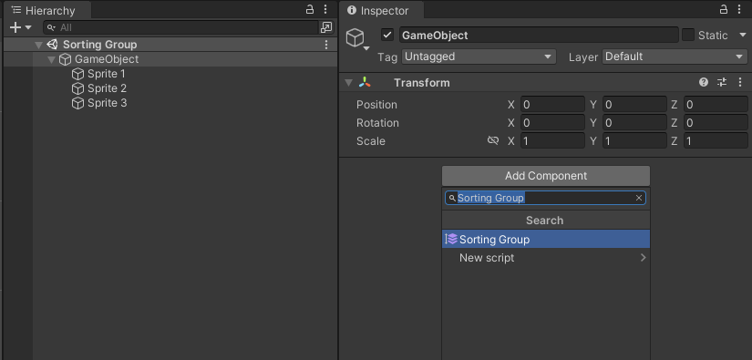

排序组
Sorting Groups allow you to group GameObjects with Sprite Renderers together, and control the order in which they render their Sprites. Unity renders Sprite Renderers in the same Sorting Group together, as if they are a single GameObject.
设置排序组
To place a GameObject into a Sorting Group, add the Sorting Group component to it. To do this, select the GameObject and go to Component > Rendering > Sorting Group, or select the Add Component button in the Inspector window of the GameObject.
将 Sorting Group 组件添加到游戏对象时，Unity 会将同一排序组应用于该组件附加到的游戏对象的所有子游戏对象。

The ‘Sprite’ child objects belong to the empty parent GameObject’s Sorting Group.
Unity 使用排序组的设置来确定如何在场景中的其他渲染器和排序组之间对渲染器进行排序。请参阅 2D 排序 以了解更多信息。
为了对排序组中的渲染器进行排序，Unity 使用排序组中渲染器的各排序设置。请参阅对排序组中的渲染器进行排序以了解更多信息。
Sorting Group 属性
Unity uses a Sorting Group’s Sorting Layer and Order in Layer values to determine its priority in the rendering queue among other Sorting Groups and GameObjects in the Scene.
| 属性 | 功能 |
|---|---|
| Sorting Layer | 从此下拉菜单中选择或添加排序图层来确定排序组在渲染队列中的位置。Unity 通过排序图层在 Sorting Layer 设置中的位置来确定排序图层的顺序，按照排序图层在列表中显示的顺序来渲染排序图层。请参阅标签和图层 (Tags and Layers) 以了解有关设置排序图层的信息。 |
| Order in Layer | Set the render order of this Sorting Group within its Sorting Layer. Unity queues Renderers with lower values first in the render queue, so they appear before Renderers with higher values. |
| Sort At Root | Enable this option to ignore all parent Sorting Groups if this Sorting Group is nested. This allows this Sorting Group to be sorted against other Renderers and Sorting Groups at the root level. |
请参阅 2D 排序以进一步了解如何使用排序图层对精灵进行排序以及 Unity 的渲染器排序条件。
对排序组中的渲染器进行排序
Unity sorts all Renderers within the same Sorting Group by their individual Sorting Layer and Order in Layer Renderer properties. Unity does not consider each Renderer’s individual Distance to Camera property during this sorting process. Instead, it sets a Distance to Camera value for the whole Sorting Group (including all its child Renderers), based on the position of the root GameObject that contains the Sorting Group component.
Unity 相对于场景中其他渲染器和排序组对排序组进行排序时，排序组的内部排序顺序保持不变。
下图显示了排序过程。

Unity treats all Renderers that belong to the same Sorting Group as a single layer, and sorts non-grouped Renderers based on their Sorting Layer and Order in Layer property settings.
粒子系统
The Editor treats a Particle System that is a child of a Sorting Group as another Renderer within that Sorting Group, and sorts it internally among other Renderers based on its Sorting Layer and Order in Layer property settings.
When Unity sorts the Particle System with the other Renderers within the Sorting Group, it ignores the Particle System’s Sorting Fudge value.
嵌套的排序组
嵌套的排序组是具有父排序组的一种排序组。Unity 首先对嵌套排序组中的渲染器进行排序，然后对其父级进行排序（请参阅对排序组中的渲染器进行排序）。
Unity 确定嵌套排序组的内部排序顺序后，会将嵌套排序组与父排序组中的其他渲染器或排序组一起进行排序。一个嵌套排序组可以有一个子嵌套排序组。Unity 首先对最里面的子组排序，然后对其各自父级排序。
下图提供了嵌套排序组的排序过程示例。

Sort At Root
In certain situations, you may have a nested Sorting Group that is ordered based on the Scene Hierarchy. However, you may want this nested Sorting Group to be rendered separately from its parent Sorting Group without changing its position in the Scene Hierarchy.
You can enable this option to allow this Sorting Group to ignore its parent Sorting Groups, which allows this Sorting Group to be sorted against other Renderers and Sorting Groups globally without requiring the GameObject to be reparented to another Transform. All child Renderers and Sorting Groups (which have not ignored their parents) will be sorted under this Sorting Group.
使用排序组
The most common way to create a 2D multi-Sprite character is to arrange and parent multiple Sprite Renderers together in the Hierarchy window to form a character. You can use Sorting Groups to help manage this kind of complex multi-Sprite character.
In the example below, the Sprite Renderers belong to the same Sorting Layer, but with different Order in Layer values. Unity sorts the different parts of a character in the order that you want them to appear.

配置排序组和排序图层之后，可以将角色另存为预制件，并根据需要进行多次克隆。
However, Prefab Sprites all have the same Sorting Layer and Order in Layer values and render to the same layers as other Prefabs, which can cause different parts of a Prefab character to intersect and layer incorrectly.

为了确保预制件的渲染顺序一致以便正确显示，请将 Sorting Group 组件添加到每个预制件的根游戏对象。保存编辑后的预制件，使所有当前和将来的预制件实例也具有 Sorting Group 组件。
Each Prefab should have a Sorting Group component with the same Sorting Layer and Order in Layer property settings. This might cause Renderers in the Prefabs that are on the same Sorting Layer to render in inconsistent ways, because they have the same priority in the Render Queue.
To prevent this issue, give each Prefab’s Sorting Group component a unique Order in Layer value. Unity renders Sorting Groups with lower Order in Layer values first and those with higher values overlap the Sorting Groups that are lower. Refer to Tags and Layers for more information about editing and reordering Sorting Layers.
Each Prefab has a Sorting Group component with a unique Order in Layer value to ensure that Unity renders each character and their parts correctly.
SortingGroup